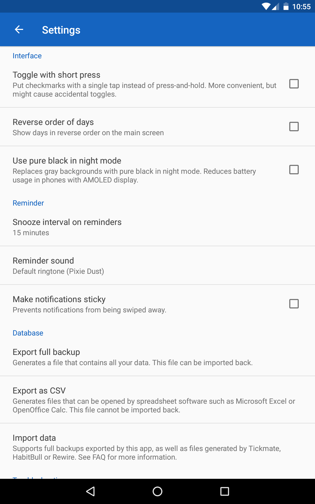

Screen Activity Name: org.isoron.uhabits.activities.settings.SettingsActivity

This Screen Implements the Following General Functionality:
- this screen allows users to view a list of ringtones
- this screen allows the user to view a list of and play
This Screen Implements the Following UI-Component Functionality:
- on the top left corner there is a back button